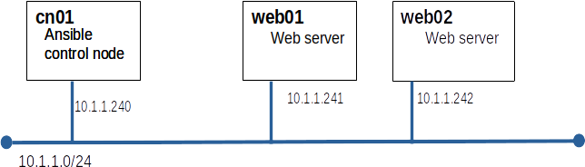

Today we will explore a leading tool for automated systems configuration management. We will use Ansible to configure systems as web servers.
A useful short introduction can be found in this Ansible Video, the first 9 and half minutes are the most valuable.
Ansible is part of the standard RHEL repos but it is not included on the ISO that we used to build our repos on Yoda.
cd /var/www/html tar xf /tmp/ansible_repo.tar
cat > /etc/yum.repos.d/yodaAnsible.repo <<EOF [yodaAnsible] metadata_expire=-1 name=yodaAnsible baseurl=http://yoda/ansible enabled=1 gpgcheck=1 gpgkey=file:///etc/pki/rpm-gpg/RPM-GPG-KEY-redhat-release EOF
yum install ansible-core
Ansible uses ssh to communicate between the control node and the managed nodes. We learned how to do this in our ssh lab.
ssh web01 hostname ssh web02 hostname
Note: all Ansible configuration and commands will be run on cn01
[web] web01 web02
ansible -m ping allshould return something like...
web01 | SUCCESS => {
"ansible_facts": {
"discovered_interpreter_python": "/usr/bin/python"
},
"changed": false,
"ping": "pong"
}
web02 | SUCCESS => {
"ansible_facts": {
"discovered_interpreter_python": "/usr/bin/python"
},
"changed": false,
"ping": "pong"
}
Ansible uses playbooks to group commands. Playbooks are YML files. YML is picky about spacing and indentation. Even more picky thank Python. We can setup vim or nano defaults to help us. Note:For the .vimrc setting to apply, you must invoke vim not vi.
set expandtab set tabstop=4or if you must... Make your ~/.nanorc file look like this:
set tabsize 4 set tabstospaces
---
- name: configure web server
hosts: web
remote_user: root
tasks:
- name: Install the latest version of Apache
ansible.builtin.dnf:
name: httpd
state: latest
ansible-playbook web_config.yml
ansible-playbook web_config.yml
- name: permit traffic in default zone for https service
ansible.posix.firewalld:
service: http
permanent: yes
immediate: yes
state: enabled
ansible-playbook web_config.yml
cat > ~/ansible/posix_requirements.yml <<EOF
---
collections:
- name: ../ansible-posix-1.5.1.tar.gz
type: file
EOF
Note: Your tar ball may have a newer version number than this example.
ansible-galaxy install -r posix_requirements.yml
ansible-playbook web_config.yml
ssh web01 firewall-cmd --reload ssh web01 firewall-cmd --list-all
curl http://web01/
- name: Enable service httpd and ensure it is not masked
ansible.builtin.systemd:
name: httpd
enabled: yes
masked: no
- name: start service httpd
ansible.builtin.systemd:
name: httpd
state: started
ansible-playbook web_config.yml
curl http://web01/
Create a second play book named home_page.yml containing the task(s) required to get publish a simple homepage on our web servers.
Submit your web_config.yml and home_page.yml to Canvas.